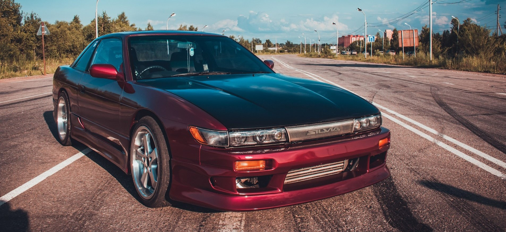
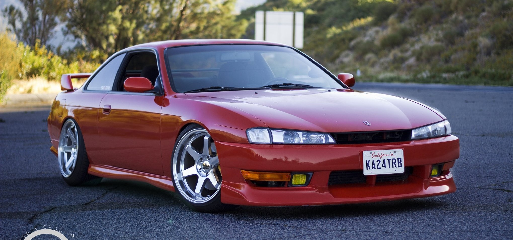
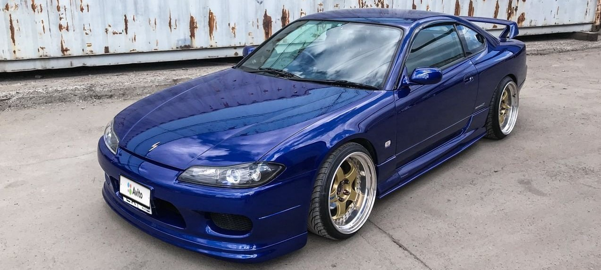

Nissan Silvia — спортивное купе, выпускавшееся японским автопроизводителем Nissan с 1965 по 2002 годы. Купе строилось на платформе Nissan S. Хотя и последние модели разделяли это шасси с другими автомобилями Nissan (в первую очередь европейская 200SX и североамериканская 240SX в поколениях S13 и S14, и модель 180SX на японском рынке), название Silvia на эти автомобили совместно с кодами шасси не переходило.
Пятое поколение:
Шестое поколение:
Седьмое поколение:
